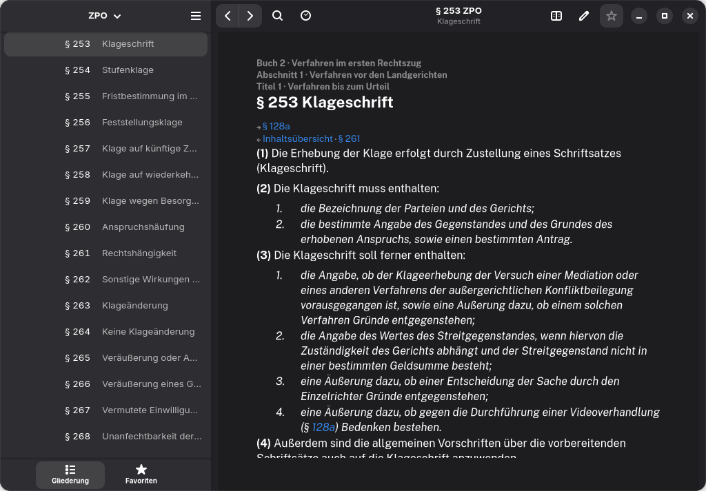
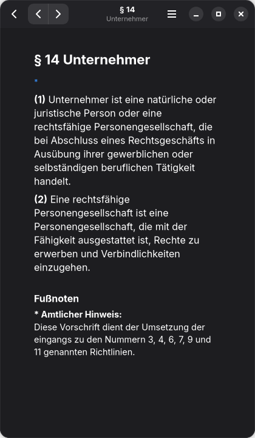

BGB, ZPO und 31 weitere Gesetze

Bis Smartphone-Breite
Installation
$ git clone https://github.com/gnome-lex/gnome-lex
$ cd gnome-lex
$ flatpak-builder --user --install --force-clean _flatpak build-aux/org.gnomelex.Gesetze.Devel.json
$ flatpak run org.gnomelex.Gesetze.DevelBenötigt org.gnome.Sdk//51 und die Erweiterung rust-stable von Flathub. Flathub-Paket folgt.